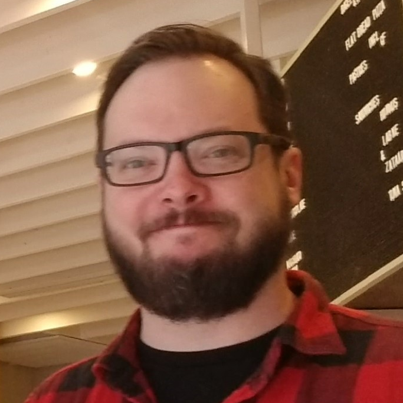
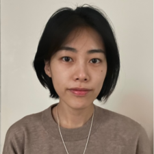
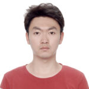
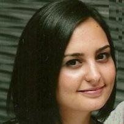
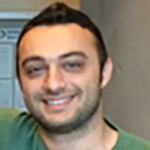

Wei Hau Lew, PhD
Postdoc Fellow
Currently: Principal Vision Scientist, Alcon
2015–2024
A former research lab at Harvard Medical School and Mass Eye and Ear.
From 2015 to 2024, the Jung Lab at Schepens Eye Research Institute / Mass Eye and Ear, Harvard Medical School investigated the interface between electrical and optical systems and human vision. Research brought together visual perception, display engineering, computational photography, and vision rehabilitation.
Work included visual field expansion with multiplexing prisms, AR and see-through mobility aids, portable VR walking assessments, and light-field imaging for visual prostheses.
Postdoc Fellow
Currently: Principal Vision Scientist, Alcon
Visiting Scholar
Currently: Asst. Prof. of Ophthalmology, Hallym University, Korea · Corneal Diseases

Postdoc Fellow
Currently: Merabet Lab, Harvard Medical School

Postdoc Fellow
Currently: Evaluation Analyst at NSW Department of Communities and Justice, Australia
Visiting Postdoc Fellow
Currently: Scientist at Agency for Science, Technology and Research (A*STAR), Singapore
Research Assistant
Currently: Senior Clinical Scientist, CooperVision
Postdoc Fellow
Currently: Senior Application Engineer at Ansys, Zemax

Visiting PhD Student
Currently: PhD student at Shanghai Jiao Tong University, Shanghai, China
Research Assistant
Currently: PhD student in Université catholique, Belgium
Research Fellow
Currently: Vision-Aid USA

Postdoc Fellow
Currently: Assistant Professor, Bilkent University, Türkiye
Research Fellow
Currently: PhD student in Northwestern University
Postdoc Fellow
Currently: PhD student in the University of Alabama
Research Assistant
Currently: PhD student in University of Nevada, Reno

Postdoc Fellow
Currently: Senior Perception Algorithm Developer at Aptiv
Postdoc Fellow
Currently: Data Scientist at Teikametrics
Co-Investigator
Instructor of Ophthalmology, Harvard Medical School · Investigator, Mass. Eye and Ear
Co-Investigator
Professor of Ophthalmology, Harvard Medical School · Senior Scientist, Moakley Scholar in Aging Eye Research, Mass. Eye and Ear